本贴内容为B站黄昏篇的部分文案修正，并在原基础上进行一些延申供大家讨论。
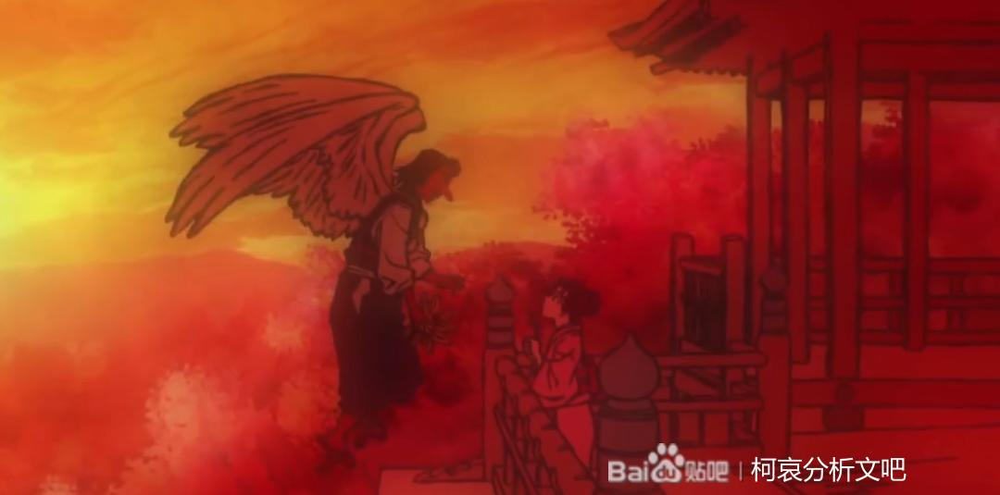
好快的南英
好快的南英
哇好快
非常期待！
大佬
cy
cy 做个视频吧
cy
哇，南英大佬
做个视频庆祝下
1234567
蹲一波
来吧来吧，期待看！
整理完会发B站吗
2024-09-07 15:32 | 南英的茶室:最近在写一个别的 很大的 很有趣的东西，比黄昏论有趣的多。新视频暂时做不出来。2024-09-07 15:34 | 南英的茶室:这个帖主要是给黄昏论相关的思路留痕迹，方便以后有分析or有吧友要做视频之类的，可以直接在这个贴子顺思路找灵感。2024-09-07 15:40 | 贴吧用户_a54A9C6:回复 南英的茶室 :期待了2024-09-07 20:17 | 贴吧用户_5CVSeSC:回复 南英的茶室 :狠狠期待住了
蹲蹲蹲 南英大佬
蹲
蹲
黄昏交界之时，光阴暧昧分不清明和暗，
黑白明灭不清，少女在灰色的狭间彷徨。
——是为题记
当时写视频文案的时候，本来是准备写月台事件的那种追逐感，也就是分享阅读体验的感觉。
恰逢当时吧里也在讨论颜色设计和安排，
于是注意到交错，黑白之间的灰色，二分之一的顶点等话题似乎能达成某种趋同。
青山可能就是喜欢某种【一半一半的交错感】，
比如新兰戏中重要的新一的声音和柯南的身体，比如脸上有什么？看见了or没看见的躲藏感，再比如最近M27亲笔写的，表白了，但是没听见的缺一半的感觉。
尤其是月台事件中，恰好满足了空间的交错，情绪的躁动，黄昏的暧昧。
【月台横断】→空间的交错
【黄昏时间】→时间的交错
于是在这种思路下，有些混乱的写了黄昏篇的视频，当时制作视频的水平低下，内容冗长，且表达不清，也没想过会有很多人看。
这里对【黄昏】的部分单独开一贴，作为文字内容供大家讨论。
黑白明灭不清，少女在灰色的狭间彷徨。
——是为题记
当时写视频文案的时候，本来是准备写月台事件的那种追逐感，也就是分享阅读体验的感觉。
恰逢当时吧里也在讨论颜色设计和安排，
于是注意到交错，黑白之间的灰色，二分之一的顶点等话题似乎能达成某种趋同。
青山可能就是喜欢某种【一半一半的交错感】，
比如新兰戏中重要的新一的声音和柯南的身体，比如脸上有什么？看见了or没看见的躲藏感，再比如最近M27亲笔写的，表白了，但是没听见的缺一半的感觉。
尤其是月台事件中，恰好满足了空间的交错，情绪的躁动，黄昏的暧昧。
【月台横断】→空间的交错
【黄昏时间】→时间的交错
于是在这种思路下，有些混乱的写了黄昏篇的视频，当时制作视频的水平低下，内容冗长，且表达不清，也没想过会有很多人看。
这里对【黄昏】的部分单独开一贴，作为文字内容供大家讨论。
cy
当时的主张在于，似乎黄昏的场景得到了青山的某种青睐，会将一些剧情安排在黄昏部分。
当然，这并不意味着因为是【黄昏】所以会有怎样的剧情。
而是，因为青山在以前的剧情中习惯性把一些剧情画在黄昏，所以根据这个习惯能推断他会干什么。
所以这不是预测，也不是分析，而是表达习惯的整理。
当然，这并不意味着因为是【黄昏】所以会有怎样的剧情。
而是，因为青山在以前的剧情中习惯性把一些剧情画在黄昏，所以根据这个习惯能推断他会干什么。
所以这不是预测，也不是分析，而是表达习惯的整理。
2024-09-07 12:56 | 流光溢止:大佬一如既往的严谨2024-09-07 13:44 | wwsabe:十分赞同，黄昏是73眼里适合表达人物强烈的感情的时间，似乎黄昏能让人的感情变得脆弱，不仅仅只是告白要选黄昏。
cy
直播

cy
首先看一下新兰几个关键剧情。
游乐园分开的时间：黄昏。
死罗神开头的时间：黄昏。
伦敦桥追逐的时间：黄昏。
游乐园分开的时间：黄昏。
死罗神开头的时间：黄昏。
伦敦桥追逐的时间：黄昏。
cy
B站更新，更新，更新！！！
来了
游乐园比较好理解，夕阳的余晖中，宛如泪珠般的珍珠。
后续分开的场景中，黄昏的场景也比较直观，20周年重制内容中也保留了黄昏时分挥手隐入人海的描写。
后续分开的场景中，黄昏的场景也比较直观，20周年重制内容中也保留了黄昏时分挥手隐入人海的描写。
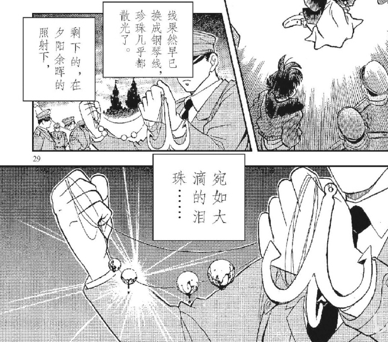
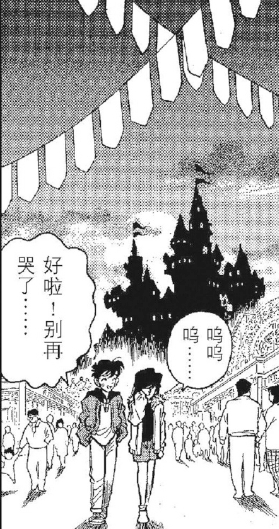
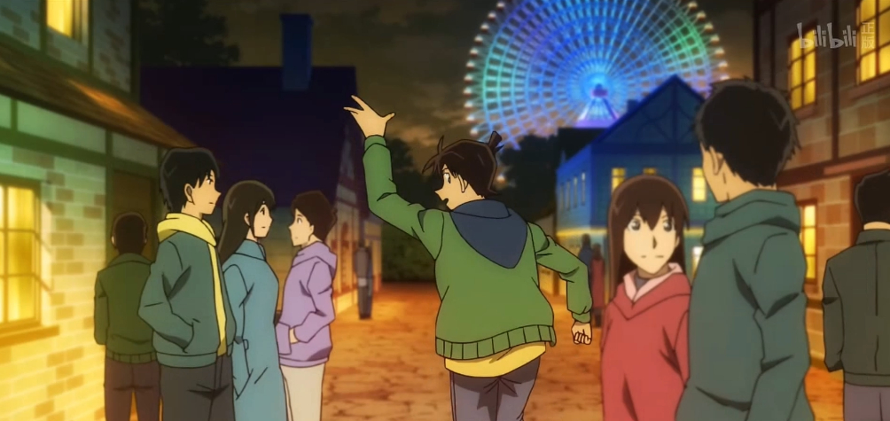
做视频啊，接广子啊
南英
也是赶上直播了
cy
cy
死罗神则是开头即黄昏，事件中出现了真假新一的问题，以及类似逢魔的场景。
【黄昏作为阴阳交错的时刻，同时也是逢魔之时。】
这其实是一个很普通的民俗常识，并不是说作者创造了这个概念。
同时青山画过许多民俗相关的内容，我认为他应该是有这个意识存在的，
而死罗神这段要证明的是，青山会刻意的在乎【黄昏】这个时间点。
【黄昏作为阴阳交错的时刻，同时也是逢魔之时。】
这其实是一个很普通的民俗常识，并不是说作者创造了这个概念。
同时青山画过许多民俗相关的内容，我认为他应该是有这个意识存在的，
而死罗神这段要证明的是，青山会刻意的在乎【黄昏】这个时间点。
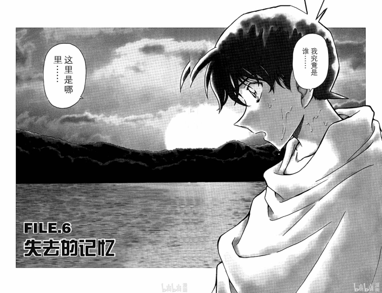
夕阳中伦敦桥上的奔跑，是我们双向逃跑的爱情（bushi。
新兰伦敦告白的时间，按照英国夏天的日落时间的来看，也是黄昏。
新兰伦敦告白的时间，按照英国夏天的日落时间的来看，也是黄昏。
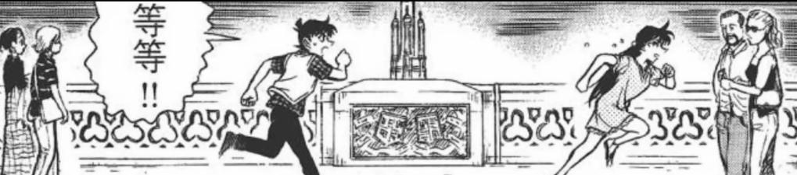
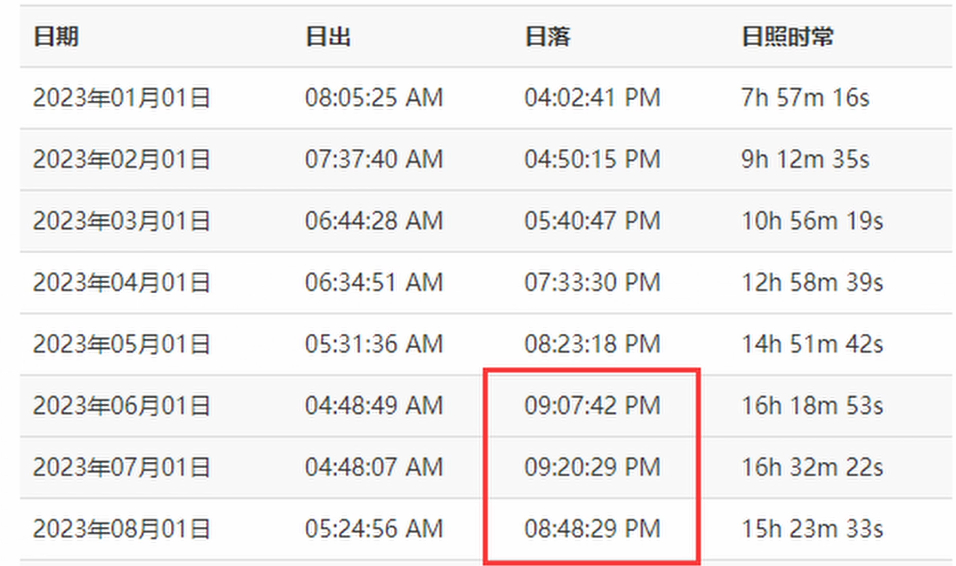
2024-09-07 21:32 | 桔梗色的星光:双向逃跑2024-09-08 19:33 | 贴吧用户_5NaAt79:我有点疑问，原著里面成对的cp都是在日本黄昏时间的么？那么在伦敦的黄昏时间岂不是又有一番分析？
也许是觉得动画组的夕阳画的不够热烈，在M27青山重制了伦敦的夕阳。
我觉得青山是很喜欢新兰的，在各种意义上。
我觉得青山是很喜欢新兰的，在各种意义上。
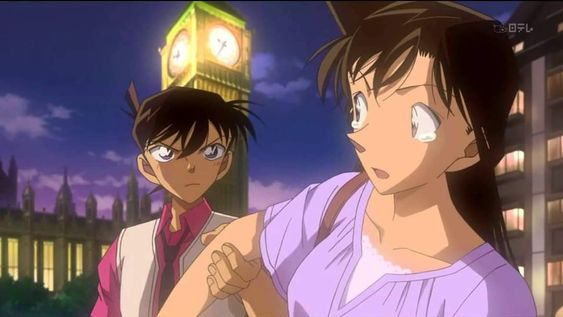
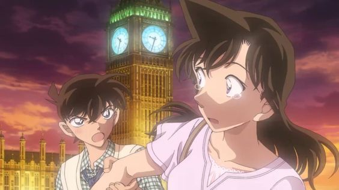
2024-09-07 12:52 | 胖太21:啊，我也觉得，青山刚昌并不是没有给sr留余地2024-09-07 13:08 | 是宗缘啊♤:单行本封面，小柯单人是很明显的夜晚2024-09-07 13:32 | 白石🌐:73称不上喜欢新兰吧，他要真喜欢新兰那怎么可能把小兰塑造成那个b样，形象连实教的寄生虫花瓶——轻井泽惠都打不过，画的用心也只是73他个人对黄昏这一意象的一个偏好吧2024-09-07 13:38 | 白石🌐:与其说73是喜欢新兰，倒不如说估计他本人最开始想画的就是新兰哀三角的感情纠葛，只能说日本恋爱喜剧是这样的，不会像国产言情整一个坏蛋小三，三角恋里每个人都不是坏人2024-09-07 13:58 | Angela忧忧:我感觉他是想给sr弄虐恋情深的戏码，但是观感比较尴尬。2024-09-07 14:54 | 梦哀:回复 白石🌐 :就是很正常的恋爱戏码，说白了大家都觉得恋爱的cp各有各的美好，最后在一起的是心意相通性格相投的。而不是国内整天靠拉踩和谩骂来互喷…国内网友这劲儿，看人家离婚都得去骂两句你们拆你们自己干嘛2024-09-08 06:34 | 焦糖布丁20132:怎么说呢，73对新兰还是有点偏爱的，奈何这对就像是扶不起的阿斗，该有的，该写的，都用完了，所以现在不是替身就是回忆，已写无可写，看73最后是愿意一意孤行还是另辟行径了2024-09-10 12:30 | mangomengke07:回复 白石🌐 :up说的“喜欢”的意思更多是指他有用心负责地思考过这一对的剧情。2024-09-10 13:06 | 白石🌐:回复 mangomengke07 :我个人觉得有动脑去塑造或设计和喜欢是两码事，当然你要是这么理解他的话，也行吧

cy，没你的视频吃不下饭
cy
cy
cy
然后最后一场新兰重头戏，红色的修学旅行。
这个时间会比较巧妙一点。
在漫画和动画中，大舞台上亲脸的时间不是黄昏。
但新一离开时，同学们集合的时间是黄昏，同样也符合黄昏时间分开。
这个时间会比较巧妙一点。
在漫画和动画中，大舞台上亲脸的时间不是黄昏。
但新一离开时，同学们集合的时间是黄昏，同样也符合黄昏时间分开。
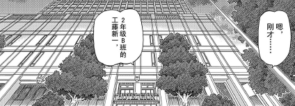
等视频
都过去一分钟了，怎么还没动静
cy
大佬来啦
虽然清水寺舞台上亲脸的时间不是黄昏，但是天狗传说是黄昏。
“仿佛将寺庙的红叶燃尽....露出了枯萎的真相。”
“在红叶最艳的黄昏...”
“仿佛将寺庙的红叶燃尽....露出了枯萎的真相。”
“在红叶最艳的黄昏...”
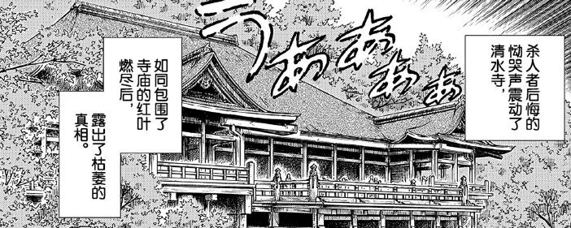
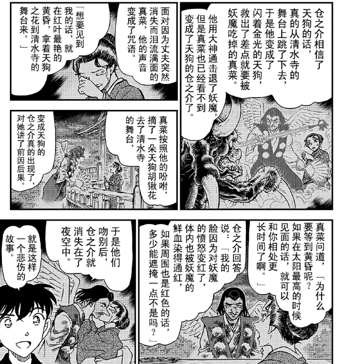
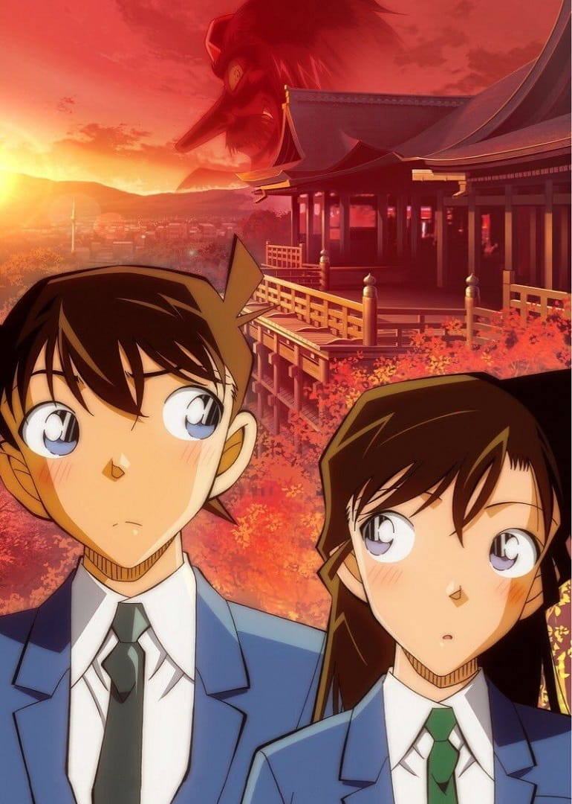
你好快啊！
cy
cy
蹲
黄昏是阴阳交错的时刻。
青山不喜欢新兰吗？我认为他是喜欢的，至少新兰在黄昏的剧情他都是很认真设计过的。
分开，分别，阴阳相隔。
我也很喜欢最近的新ED，很有红修之后现在新兰的感觉。
在梦中相见吧！“”
青山不喜欢新兰吗？我认为他是喜欢的，至少新兰在黄昏的剧情他都是很认真设计过的。
分开，分别，阴阳相隔。
我也很喜欢最近的新ED，很有红修之后现在新兰的感觉。
在梦中相见吧！“”
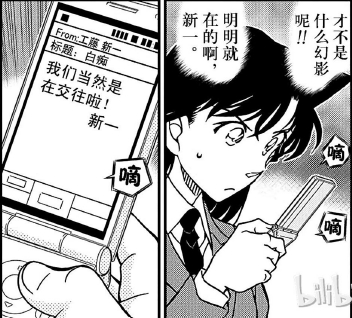
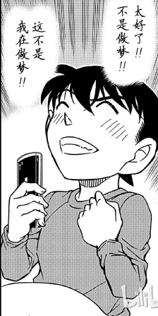
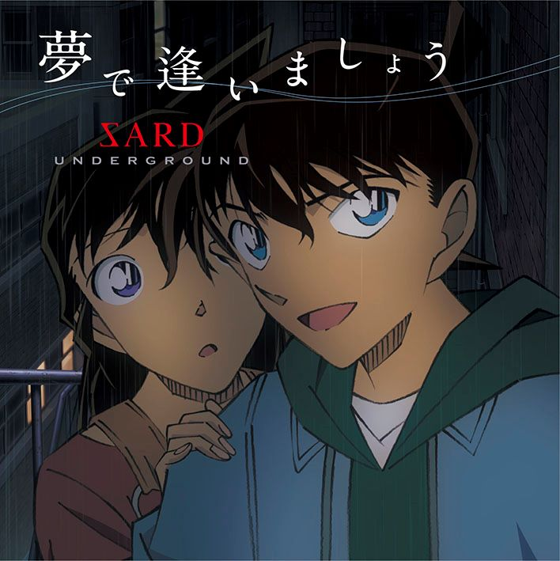
2024-09-07 13:31 | 卷福花生酱酱酱:哈哈哈哈哈 其实就是梦（doge2024-09-07 18:28 | ✆宝宝烤面包😞:新兰 做梦2024-09-08 04:12 | 47锛坆鈥唂鈥唌:草2024-09-10 12:31 | mangomengke07:是的，是认真且负责任设计的。2024-09-12 19:08 | 雏菊珊瑚:属于是另有乾坤了
黄昏=揭露真相的时刻？
黄昏之时，逢魔之刻，又联想到撒旦论了
蹲
说黄昏，我就秒想到狼人杀。
 天黑请闭眼
天黑请闭眼
石像鬼请行动，狼人请行动，女巫请行动，预言家请行动，守墓人请行动，天亮了。
天黑请闭眼石像鬼请行动，狼人请行动，女巫请行动，预言家请行动，守墓人请行动，天亮了。
cy
还有一个工藤新一的少年探险。
以月下开始，以看夕阳为结束。
正常来讲时间顺序应该是：白天→夕阳→夜晚
但青山的顺序是：夜晚→白天→夕阳
插句题外话，一些电影作品会通过开始时间来确定某种观念，比如开头是晚上，而结尾是白天。
采用逆时间观感的方式暗示氛围的变化。
在少年冒险中，黄昏是事件的【结束】，是二人的共同回忆。
同时，可以猜一下青山是很喜欢晚上的。
快新楼顶初遇，银翼的魔术师，月光阳台的守护，都是晚上。
以月下开始，以看夕阳为结束。
正常来讲时间顺序应该是：白天→夕阳→夜晚
但青山的顺序是：夜晚→白天→夕阳
插句题外话，一些电影作品会通过开始时间来确定某种观念，比如开头是晚上，而结尾是白天。
采用逆时间观感的方式暗示氛围的变化。
在少年冒险中，黄昏是事件的【结束】，是二人的共同回忆。
同时，可以猜一下青山是很喜欢晚上的。
快新楼顶初遇，银翼的魔术师，月光阳台的守护，都是晚上。
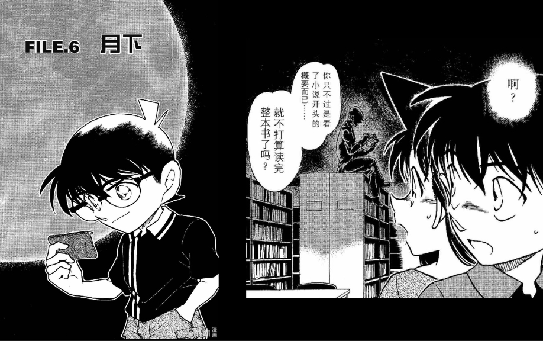
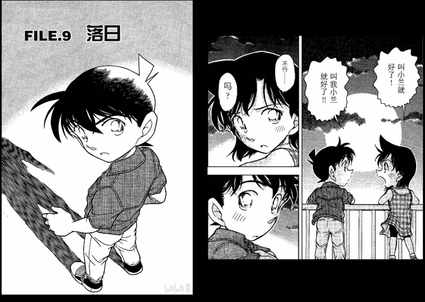
cy
安达充的美雪美雪里也有特别多的黄昏特写
白天→【黄昏→夜晚】
【白天→黄昏】→夜晚
我觉得青山毫无疑问偏爱的是后半部分。
【白天→黄昏】→夜晚
我觉得青山毫无疑问偏爱的是后半部分。
赶上热的了
讲完新兰的黄昏剧情之后，再简单看一下其它几个【重要黄昏】。
黄昏是一个常见的场景，很多地方都会出现，因此切忌滑坡，不要把确实存在的作品内容变成梗。
漫画三十三卷情人节事件中，白鸟和佐藤在夕阳时刻错开嘴唇，情绪交错间这才察觉到高木在心中的地位。
黄昏别馆事件中，宅邸的真容在夕阳时刻完全的显露，而后在最为光辉的时刻坍塌。
黄昏是一个常见的场景，很多地方都会出现，因此切忌滑坡，不要把确实存在的作品内容变成梗。
漫画三十三卷情人节事件中，白鸟和佐藤在夕阳时刻错开嘴唇，情绪交错间这才察觉到高木在心中的地位。
黄昏别馆事件中，宅邸的真容在夕阳时刻完全的显露，而后在最为光辉的时刻坍塌。
黄昏在青山的笔下总是消极又悲伤的上演着结束与错过，代表着某种事件如日落一般的终结，
于是他将这种对现实情景的感想借灰原哀之口传出，
黄昏是太阳的终结，让世界都染上了鲜血般悲哀的色彩。
于是他将这种对现实情景的感想借灰原哀之口传出，
黄昏是太阳的终结，让世界都染上了鲜血般悲哀的色彩。
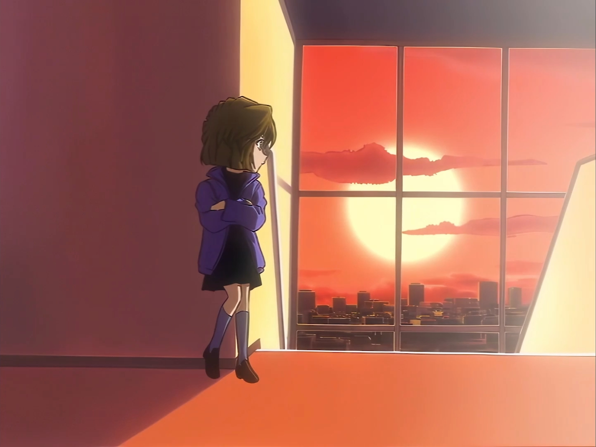
2024-09-07 21:46 | 饼干和熊:"这样的色彩，我还能再看几次"。。哀当时的想法太悲伤了。。
cy(✪▽✪)
有些人可能到这里就有疑问了，既然青山觉得黄昏是一种悲伤的终结，那黄昏岂不是坏的了吗？
我的回答是，不要随意梗化故事内容，随意用好or坏作为先入观去理解故事是很糟糕的。
青山喜欢黄昏，不代表他认为黄昏好or黄昏坏，而是黄昏这个场景他很喜欢。
在这个场景中他会安排许多感情戏，有白鸟的自认失败，有新兰的黄昏分别，有宣告少年侦探团完全小朋友化的女儿节夕阳楼梯。
作者喜欢这个场景，和好坏无关。
我的回答是，不要随意梗化故事内容，随意用好or坏作为先入观去理解故事是很糟糕的。
青山喜欢黄昏，不代表他认为黄昏好or黄昏坏，而是黄昏这个场景他很喜欢。
在这个场景中他会安排许多感情戏，有白鸟的自认失败，有新兰的黄昏分别，有宣告少年侦探团完全小朋友化的女儿节夕阳楼梯。
作者喜欢这个场景，和好坏无关。
2024-09-10 12:32 | mangomengke07:或者说符号化
南英老师，请问你觉得黄昏意向是否有必要跟夕阳区别，一个是日落后渐渐变暗，一个是日落时刻。二者相近，但不一样。
南英大大
小樱头像可爱滴捏说起黄昏，君名里的泷和三叶也是在黄昏之时重逢，念完“片割れ時”之后相见的场景太经典了，这一点说不定和73的创作想法不谋而合，也难怪73会说自己喜欢君名了
说起黄昏，君名里的泷和三叶也是在黄昏之时重逢，念完“片割れ時”之后相见的场景太经典了，这一点说不定和73的创作想法不谋而合，也难怪73会说自己喜欢君名了2024-09-07 15:01 | 南英的茶室:是的，结合《等着我》，君名可太对胃口了。2024-09-07 22:43 | 贴吧用户_5726KyK:君名里面黄昏的意义也是一开始就在从各种意象上铺垫的，日本那边黄昏的意向确实很重要2024-09-07 23:42 | 白石🌐:回复 贴吧用户_5726KyK :也是，毕竟逢魔之时
等个新视频
而灰原哀之于黄昏，到底是什么呢？
首先明确一点，灰原哀长期（尤其是前期）居于故事的评价者这种有点高维的地位，也就是作者的嘴替位置。
她评价黄昏很糟糕，不代表她在黄昏中会有很悲伤的剧情，而是作者让她有权给黄昏定调：【一种悲伤的终结】
而对于角色在故事中而言，认为黄昏是悲伤的剧情，就像堕天使之于宫野艾莲娜。
有些叹气的评价一个东西差，相反它的真实却出乎意料的美好。
“夕阳，将世界染上血色的太阳的终结。不知道我还能看到几次，这种悲伤的色彩。”
首先明确一点，灰原哀长期（尤其是前期）居于故事的评价者这种有点高维的地位，也就是作者的嘴替位置。
她评价黄昏很糟糕，不代表她在黄昏中会有很悲伤的剧情，而是作者让她有权给黄昏定调：【一种悲伤的终结】
而对于角色在故事中而言，认为黄昏是悲伤的剧情，就像堕天使之于宫野艾莲娜。
有些叹气的评价一个东西差，相反它的真实却出乎意料的美好。
“夕阳，将世界染上血色的太阳的终结。不知道我还能看到几次，这种悲伤的色彩。”
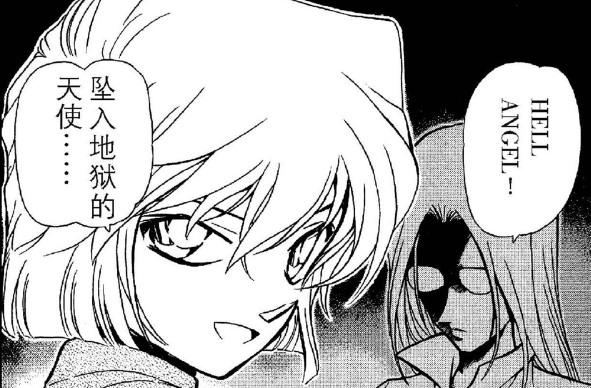
cy
黑和白之间的少女，就像白天和黑夜之间的黄昏。
有时候也能理解为什么各种自由发挥的地方不带灰原，因为这种在一半一半的感觉，青山不愿意让别人写。
这部分只有他能处理好，太直球不行，太拐弯不行，总之很麻烦。
有时候也能理解为什么各种自由发挥的地方不带灰原，因为这种在一半一半的感觉，青山不愿意让别人写。
这部分只有他能处理好，太直球不行，太拐弯不行，总之很麻烦。
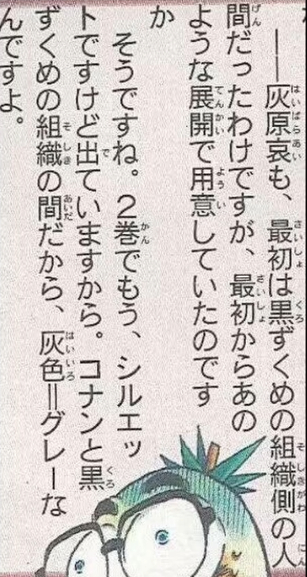
坐等视频的更新
在假面骑士剧本的台词练习中，黄昏般暧昧的光影里，少女演练的台词真假参半，我从一开始就爱上你了，假面超人。
躁动又暧昧，分不清真假。
躁动又暧昧，分不清真假。
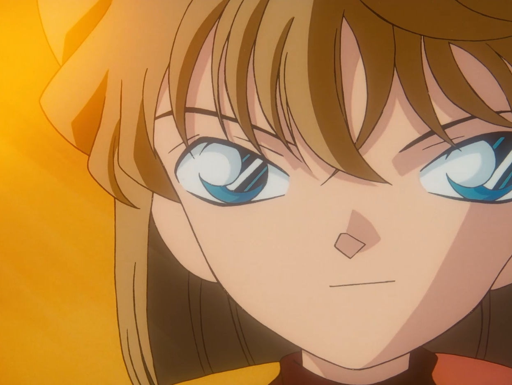
2024-09-07 14:03 | Angela忧忧:回复 南英的茶室 :假面骑士这里我觉得是动画组做了个好事，他们为了呼应台词“第一次见面就爱上你了”把漫画里柯的西装衬衫和哀的黑衣服改成了柯哀第一次相见时柯南的黄绿T恤和哀的红色高领背心。2024-09-07 15:06 | 南英的茶室:回复 Angela忧忧 :hh，但我觉得动画那里那身衣服把小柯画的有点太小男生了2024-09-07 15:15 | Angela忧忧:回复 南英的茶室 :回复 南英的茶室 :漫画里那个衬衫西装确实很帅。m26 5张回忆杀里有一张和那一套好像是一样的。（当然不是一个场景）
在黄昏的月台上，电车呼啸进站的瞬间是男孩躁动的开始，晚霞里柔和蔓延的情愫是平静的结束。在黄昏躁动又暧昧的情绪中，害怕失去的男孩也丢了优雅。
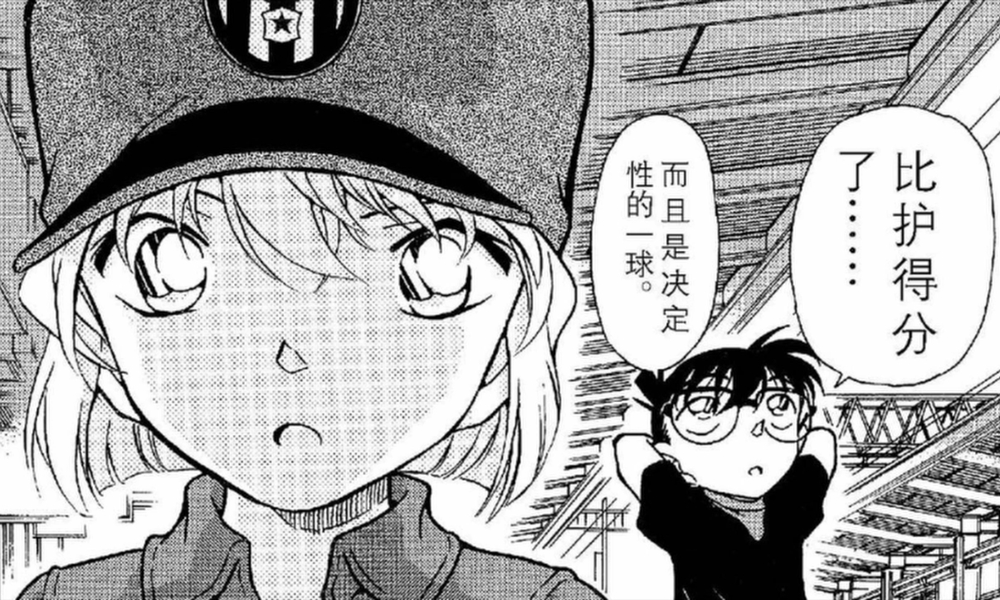
在满月到来的前奏里，柯南决定单独赴约替女孩挡下所有的下午，黄昏里得知贝尔摩德名号的女孩担心与害怕的情绪交杂，而少年决定单独赴约，换上女孩的假面深入黑夜，麻醉针霸道的宣誓着属于他的关心，暂停了黄昏中所有的躁动和不安。
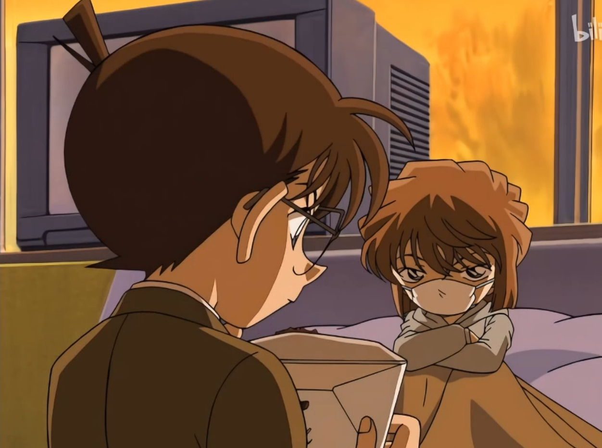
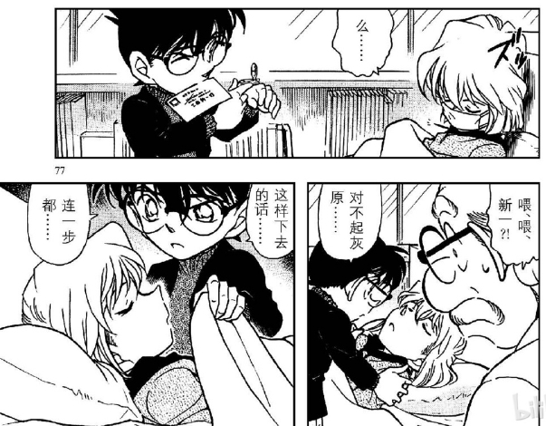
最后，也是我认为的最平静也最美的雨后黄昏。
在拒绝FBI证人保护计划的那个下午，少女走在黄昏的余晖中，以一种错乱之后归于平静的姿态回到众人的身边，黄昏的给她们的关系镀上了金色的釉。
从这一话之后吗，柯哀二人的关系再也不存在早期的若即若离和患得患失，反而坚定的让对方相信对方今后的命运里会有对方存在。
当时看到这一话的时候还没有什么感觉，很多年以后才察觉到，从这一刻开始应该感到放心才对。
在拒绝FBI证人保护计划的那个下午，少女走在黄昏的余晖中，以一种错乱之后归于平静的姿态回到众人的身边，黄昏的给她们的关系镀上了金色的釉。
从这一话之后吗，柯哀二人的关系再也不存在早期的若即若离和患得患失，反而坚定的让对方相信对方今后的命运里会有对方存在。
当时看到这一话的时候还没有什么感觉，很多年以后才察觉到，从这一刻开始应该感到放心才对。
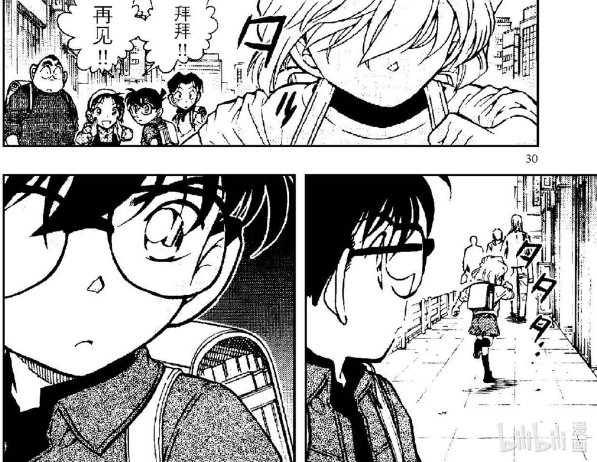
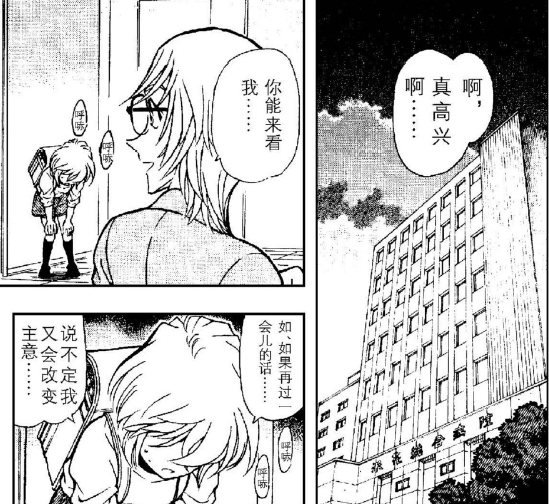
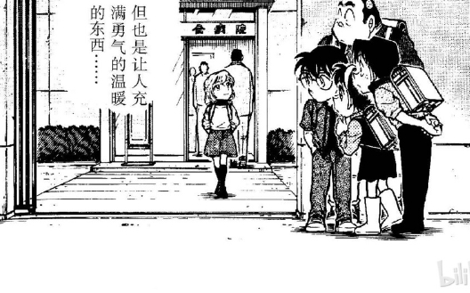
2024-09-08 21:10 | snowfly1024:就像宝玉对黛玉说的“你放心”一样2024-09-10 12:33 | mangomengke07:回复 snowfly1024 :2024-09-10 12:34 | mangomengke07:回复 snowfly1024 :三个字千金重，千斤重
而这个也算柯哀前期关系阶段性结束的黄昏了吧hh
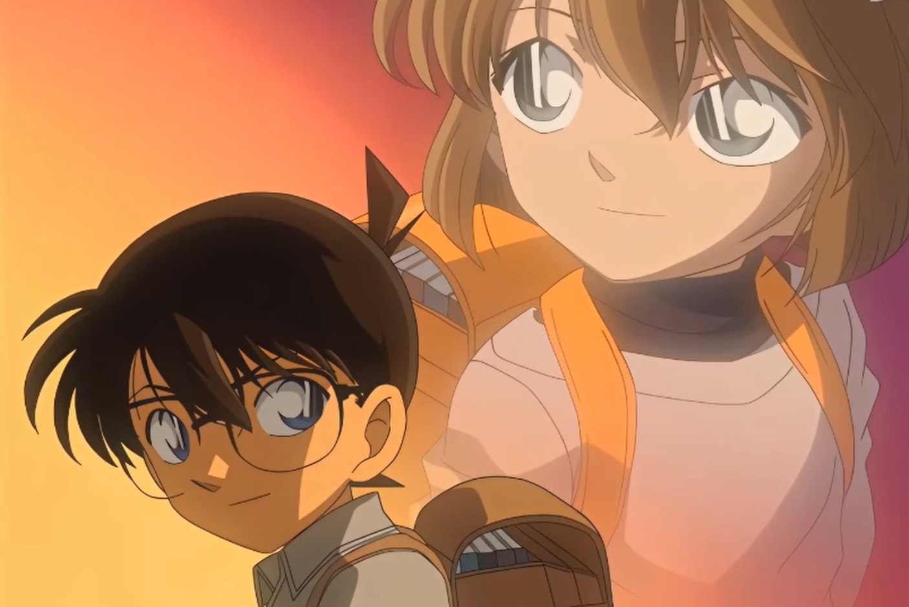
2024-09-07 16:52 | 贴吧用户_016eQC6:不过这一幕好像是动画原创的2024-09-07 17:22 | 頔丣萌訣:回复 贴吧用户_016eQC6 :是吗？我还没解锁前面的部分2024-09-08 06:57 | 焦糖布丁20132:回复 贴吧用户_016eQC6 :嗯，但是应该也是黄昏，只不过变成了两人的单图，原图漫画是80楼那张，但是时间应该没有问题，也是在黄昏2024-09-10 09:54 | Angel哀ლ:回复 頔丣萌訣 :这个二人同框是原创的，原作是柯南偷偷的看她，意思其实差不多2024-09-10 12:35 | mangomengke07:回复 Angel哀ლ :还是漫画更妙一些，这个动画多少有点让关系性定格静止的味道，漫画就有那种拉扯的“to be continued"感2024-09-10 16:30 | Angel哀ლ:回复 mangomengke07 :这么说的话确实，有那种默默关注的感觉
至于这次和平终于表白成功了，去高出看夕阳，平平淡淡，一半一半的感觉，
被听到了吗？真的吗？真的啊！
暧昧，躁动，牵手归于平静。
算是意料之中...? 一开始以为还会再拖一拖。
被听到了吗？真的吗？真的啊！
暧昧，躁动，牵手归于平静。
算是意料之中...? 一开始以为还会再拖一拖。
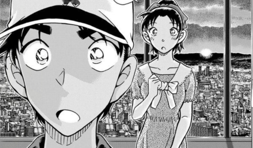
另外插两句题外话。
题外话一：青山看完君名说很喜欢，看完就知道哪里很好。
而君名的重点就是：
二分之一的分界，梦，黄昏，找到对面存在的痕迹。结合早期青山的作品《等着我》来看，这简直就是在青山的兴奋点上跳舞。
题外话一：青山看完君名说很喜欢，看完就知道哪里很好。
而君名的重点就是：
二分之一的分界，梦，黄昏，找到对面存在的痕迹。结合早期青山的作品《等着我》来看，这简直就是在青山的兴奋点上跳舞。
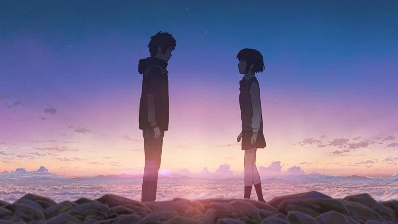
南英给力

题外话二。
这个比较爆论，之前和朋友聊天，押这次能表白成功的很大一个原因。是因为这次不仅是黄昏，同时也是高处。
古代日本是没有什么高楼的，因此有种传说是很高的楼层上面是接近神仙的地方，就和交界处容易碰见灵异事件一样，高楼也算一种离开地面人界的感觉。（这种古代怪谈应该在哪都一样
再结合平次容易逢墨和碰见灵异案件的buff，这次感觉真能成，也不知道理由到底是为什么，但是就感觉这次再不成下次在哪找机会呢？
你看那楼又高，风景又好，快成了吧hhhhhhhh
这个比较爆论，之前和朋友聊天，押这次能表白成功的很大一个原因。是因为这次不仅是黄昏，同时也是高处。
古代日本是没有什么高楼的，因此有种传说是很高的楼层上面是接近神仙的地方，就和交界处容易碰见灵异事件一样，高楼也算一种离开地面人界的感觉。（这种古代怪谈应该在哪都一样
再结合平次容易逢墨和碰见灵异案件的buff，这次感觉真能成，也不知道理由到底是为什么，但是就感觉这次再不成下次在哪找机会呢？
你看那楼又高，风景又好，快成了吧hhhhhhhh
这一话很多东西感觉都是callback，比如颜色相关的标题，舞台剧，红叶和死罗神等等。
总之终于是在一起了~
总之终于是在一起了~
2024-09-07 15:22 | 微蓝の哀:还有和叶妈妈假扮和叶对标危命中小哀假扮柯南，真的很多都很明显。小兰和红叶的那个“眼泪止不住”也真是再明显不过了。2024-09-07 18:36 | 150XXXX0800:回复 微蓝の哀 :sr大戏元素都有，很难不觉得在影射什么2024-09-08 08:04 | 坠入蓝海🌊:73: 我都记着呢
回复 微蓝の哀 :是的 我觉得真的很明显 从观赏性和创作来说 没有红叶的镜头其实更好 但是他就是画了2024-09-08 21:33 | 月名殇:2024-09-08 21:35 | 月名殇:回复 坠入蓝海🌊 :2024-09-10 09:58 | Angel哀ლ:只能说再次提醒 如果青山他能坚持自己是恋爱喜剧 后面红叶在找到独属于自己的真爱之前 肯定会继续插足和平感情 属于老传统了 保持好预期别上头
回复 月名殇 :我感觉不至于，要这么写红叶的观感会很不好，而且感觉这里结尾点红叶更像是把这条线斩断了，后续即使再出现顶多也就是和平次开个玩笑那种，不好再直接插入了
蕾姆呜呜呜
前排！沙发！速来！
日出、黄昏、满月、雪景等意象表达本身就是带有强烈情绪的，其实也不只是青山喜欢，很多漫画家动画人也喜欢，比如君名的插曲直接就叫黄昏之时。
漫画里多次出现黄昏时段的重要剧情，代表的是青山在黄昏的运用上存在偏好性，可以以此为基础进行一些简单预测≠漫画中出现的所有黄昏都有意义≠黄昏一定有大事件发生≠大事件一定要在黄昏发生
漫画里多次出现黄昏时段的重要剧情，代表的是青山在黄昏的运用上存在偏好性，可以以此为基础进行一些简单预测≠漫画中出现的所有黄昏都有意义≠黄昏一定有大事件发生≠大事件一定要在黄昏发生
2024-09-07 15:08 | 南英的茶室:捉2024-09-07 15:09 | YwY▫-:希望不要滑坡到什么奇怪的地方2024-09-07 15:23 | ArtemiSae:捕捉南栗嘿嘿2024-09-07 21:38 | 桔梗色的星光:捉小栗
好耶！
cy
我说的平和在1133话告白成功，是对青山创作进度的一种把控，并没有说“1133”这个数字本身蕴含着什么深意，我之前还预测过朗姆篇大决战是在108卷，名柯漫画会在120卷完结，至于会不会预测成功，就让时间来见证吧
逢魔时刻，黄昏就是一个暧昧的时间，而且颜色上也很美，当然太阳初升也很美，但很难成为常态化的表达，适合大结局的时候经历黑夜迎来黎明，夜晚是有一些静谧，需要和月光搭配
好饭好饭，们擦擦的大文学家南英，大佬眼中的名柯世界真美啊
以前我曾经分析过SR常用的话术（不过那个帖子因为ID被SR恶意举报而屏蔽了），现在重新说说我个人的观点吧：
许多SR骂青山大男子主义，就像有武侠迷骂金庸“整天YY，如果女生不喜欢自己就要让她很惨”之类（后者最典型的例子就是《笑傲江湖》里的岳灵珊）。可问题是我一直没想明白，不论青山或者金庸个人的品行怎样（不要误会，我很喜欢这两位作者，这里做假设单纯就是不以那些争议论长短），他们为什么不能写一些在个人构思框架下的人物？
金庸就是哪怕他个人生活有争议，但是难道他不能写一个因为恋爱脑而坑害自己的人物吗？非得把人物全部写的超凡脱俗才能被称作“不是YY”？
对于青山来说难道他不能画一种普通的虽然是普通的青梅竹马但是两人价值观完全不同的情况？就像现在常说的，对于女性来说，只要出于个人自愿（完全自愿，并非客观环境下被迫的“自愿”），究竟想做职场女性还是把家庭放在第一位都值得尊敬，挑拨一方瞧不起另一方是带有极大恶意的。lan的性格就是除了出去追星、聚会之类的活动外更愿意把精力花在打扫卫生上，青山为什么不能写这样一个角色？
他要表达的就是哪怕有着青梅竹马的岁月，但是因为双方性格和三观的差异，终究会渐行渐远的故事啊（哪怕没有灰原哀出场，哪怕SR真的走到结婚，新一的职业注定他不能长期守在家里陪老婆，能想象lan对此毫无怨言吗？即使大和抚子式的忍耐也不代表没有委屈，或者换句话说，除了拉窗帘时的那种近乎神话的膜拜“新一不会让任何人死”之外，lan和新一有任何共同语言吗？但凡有一项共同语言，我也算他们在婚姻生活中不会落到鸡同鸭讲的地步。须知后者正是三次元里很多人拒绝和无爱对象在一起的原因）！
哪怕被称为SR巅峰的“危命篇”，我也一直有一个问题：新一都邀请lan去了父母订婚的高级餐厅，如果说后面是因为案子延误了表白时间，那么之前呢？新一居然一直在大谈特谈lan明确表示过厌恶的福尔摩斯，直到lan忍耐不住打断？如果要表现时间不够用了，把谈福尔摩斯的格子换成新一匆匆赶来“对不起，路上塞车了”不行吗？或者哪怕谈谈在lan眼中两人分开的时间里的近况也行啊（就算新一没什么可说，案子总是能谈的）……
结果居然要靠福尔摩斯来占用案子之前的时间，侧面说这俩人不就是没有共同语言吗？
但是，即使是这样一个渐行渐远的故事，表现的也只是说SR两人的不适合，或者说“人一生中总会遇到很多人，可是最适合自己的那个需要寻寻觅觅”，不代表青山在批判安于现状和享乐的lan式生活。
P.S.写完了才发现我好像发散思维过了头，其实本意是因为看到作者写下的“青山各种意义上喜欢新烂”，所以一时有感而发所作的表达。
许多SR骂青山大男子主义，就像有武侠迷骂金庸“整天YY，如果女生不喜欢自己就要让她很惨”之类（后者最典型的例子就是《笑傲江湖》里的岳灵珊）。可问题是我一直没想明白，不论青山或者金庸个人的品行怎样（不要误会，我很喜欢这两位作者，这里做假设单纯就是不以那些争议论长短），他们为什么不能写一些在个人构思框架下的人物？
金庸就是哪怕他个人生活有争议，但是难道他不能写一个因为恋爱脑而坑害自己的人物吗？非得把人物全部写的超凡脱俗才能被称作“不是YY”？
对于青山来说难道他不能画一种普通的虽然是普通的青梅竹马但是两人价值观完全不同的情况？就像现在常说的，对于女性来说，只要出于个人自愿（完全自愿，并非客观环境下被迫的“自愿”），究竟想做职场女性还是把家庭放在第一位都值得尊敬，挑拨一方瞧不起另一方是带有极大恶意的。lan的性格就是除了出去追星、聚会之类的活动外更愿意把精力花在打扫卫生上，青山为什么不能写这样一个角色？
他要表达的就是哪怕有着青梅竹马的岁月，但是因为双方性格和三观的差异，终究会渐行渐远的故事啊（哪怕没有灰原哀出场，哪怕SR真的走到结婚，新一的职业注定他不能长期守在家里陪老婆，能想象lan对此毫无怨言吗？即使大和抚子式的忍耐也不代表没有委屈，或者换句话说，除了拉窗帘时的那种近乎神话的膜拜“新一不会让任何人死”之外，lan和新一有任何共同语言吗？但凡有一项共同语言，我也算他们在婚姻生活中不会落到鸡同鸭讲的地步。须知后者正是三次元里很多人拒绝和无爱对象在一起的原因）！
哪怕被称为SR巅峰的“危命篇”，我也一直有一个问题：新一都邀请lan去了父母订婚的高级餐厅，如果说后面是因为案子延误了表白时间，那么之前呢？新一居然一直在大谈特谈lan明确表示过厌恶的福尔摩斯，直到lan忍耐不住打断？如果要表现时间不够用了，把谈福尔摩斯的格子换成新一匆匆赶来“对不起，路上塞车了”不行吗？或者哪怕谈谈在lan眼中两人分开的时间里的近况也行啊（就算新一没什么可说，案子总是能谈的）……
结果居然要靠福尔摩斯来占用案子之前的时间，侧面说这俩人不就是没有共同语言吗？
但是，即使是这样一个渐行渐远的故事，表现的也只是说SR两人的不适合，或者说“人一生中总会遇到很多人，可是最适合自己的那个需要寻寻觅觅”，不代表青山在批判安于现状和享乐的lan式生活。
P.S.写完了才发现我好像发散思维过了头，其实本意是因为看到作者写下的“青山各种意义上喜欢新烂”，所以一时有感而发所作的表达。
2024-09-08 14:13 | 洛易梦:srds，金庸自爆过会因为场外原因修改剧情，青山不好说2024-09-08 17:01 | 清茶姑娘:回复 洛易梦 :即使修改剧情，也是在作者能力范围之内让这个人物符合故事发展逻辑（如果说作者能力有限达不到标准就是另一回事了），所以还是作者写的就是一个符合人物自身性格特点的角色，而不是先批判作者生活上的争议，再抹杀作者有写这种类型人物的权力2024-09-08 17:20 | 洛易梦:回复 清茶姑娘 :那是没毛病，写肯定能写的，我对人类多样性很有信心
cy
说个和名柯有关又无关的，泰坦尼克号里最经典的那一幕也是黄昏
cy

蹲蹲大佬
73喜欢【黄昏→夜晚】这个太妙了观察下来像画家 小说家之类的职业都普遍喜欢熬大夜 因为晚上安静真的很容易爆灵感
观察下来像画家 小说家之类的职业都普遍喜欢熬大夜 因为晚上安静真的很容易爆灵感